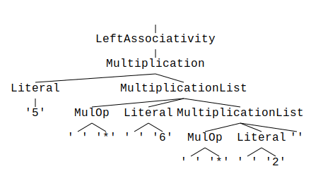
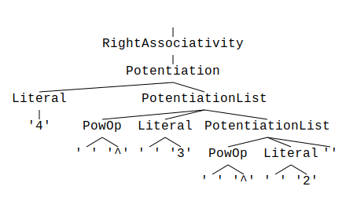

Operator associativity
Operator associativity describes the "direction" in which operators of the same precedence are evaluated.
Left associativity
First let's have a look at left associativity.
We'll demonstrate this with a small example grammar that only supports multiplication which is left
associative, i.e. x * y * z is evaluated as (x * y) * z.
%start LeftAssociativity
%title "Operator associativity"
%comment "Shows the handling of operator associativity in `parol`"
%%
Literal : "(?:[0-9] *)+"
;
// ---------------------------------------------------------
// OPERATOR SYMBOLS
MulOp : "\*"
;
// ---------------------------------------------------------
// EXPRESSIONS
LeftAssociativity
: Multiplication
;
Multiplication
: Literal { MulOp Literal }
;
You can try this grammar by calling
parol new --bin --path .\left_associativity --tree
Open the generated crate and substitute the generated dummy grammar by the one above.
Also change the test.txt to the content
5 * 6 * 2
Now you can parse this text by calling
cargo run ./test.txt
from the generated crate's root folder.
Parsing the string 5 * 6 * 2 with the generated parser will create the following parse tree:

Hint: If the picture is too small please open it in a separate tab via context menu.
Now you would say "Stop, this parse tree imposes right associativity! The expression is evaluated from right to left".
This is right at the first glance but there is one thing you have to know about parol's internals:
If you use parol with auto-generation mode (flag -g) all repetitive grammar constructs are
provided as vectors in your AST types.
Snippet from the generated types in src/left_associativity_grammar_trait.rs:
#![allow(unused)] fn main() { /// Type derived for non-terminal Multiplication pub struct Multiplication<'t> { pub literal: Box<Literal<'t>>, pub multiplication_list: Vec<MultiplicationList<'t>>, } /// Type derived for non-terminal MultiplicationList pub struct MultiplicationList<'t> { pub mul_op: Box<MulOp<'t>>, pub literal: Box<Literal<'t>>, } }
This means that items of a repetition ({...}) are stored in a vector and can be processed later in
the desired direction. I defined this behavior for all repetitions of grammar items.
With this explained you can figure out that it is up to your grammar processing to chose the right direction of evaluation.
We will complete this explanation by implementing our example that way.
Therefore apply the following changes to src/left_associativity_grammar.rs.
Replace the use statements at the top of the file with the following lines:
#![allow(unused)] fn main() { use crate::left_associativity_grammar_trait::{ LeftAssociativity, LeftAssociativityGrammarTrait, Literal, }; use miette::Result; use miette::{bail, IntoDiagnostic}; use std::fmt::{Debug, Display, Error, Formatter}; }
Add a result member to the struct LeftAssociativityGrammar:
#![allow(unused)] fn main() { pub struct LeftAssociativityGrammar<'t> { pub left_associativity: Option<LeftAssociativity<'t>>, pub result: u32, } }
Add the following two functions to the impl block of the struct LeftAssociativityGrammar:
#![allow(unused)] fn main() { fn number(literal: &Literal) -> Result<u32> { literal.literal.text().parse::<u32>().into_diagnostic() } fn process_operation(&mut self) -> Result<()> { if let Some(grammar) = &self.left_associativity { let init = Self::number(&grammar.multiplication.literal)?; self.result = grammar.multiplication.multiplication_list.iter().fold( Ok(init), |acc: Result<u32, miette::ErrReport>, mul| { if let Ok(mut acc) = acc { acc *= Self::number(&mul.literal)?; Ok(acc) } else { acc } }, )?; Ok(()) } else { bail!("No valid parse result!") } } }
Change the Display implementation in this way:
#![allow(unused)] fn main() { impl Display for LeftAssociativityGrammar<'_> { fn fmt(&self, f: &mut Formatter<'_>) -> std::result::Result<(), Error> { match &self.left_associativity { Some(_) => writeln!(f, "{}", self.result), None => write!(f, "No parse result"), } } } }
And finally change the last line of the function left_associativity at the end of the file from
#![allow(unused)] fn main() { Ok(()) }
to
#![allow(unused)] fn main() { self.process_operation() }
And now run the parser again:
$ cargo run ./test.txt
Compiling left_associativity v0.1.0 (C:\Users\joerg\Source\temp\left_associativity)
Finished dev [unoptimized + debuginfo] target(s) in 1.77s
Running `target\debug\left_associativity.exe .\test.txt`
Parsing took 3 milliseconds.
Success!
60
Great! The parser processed the input correctly and calculated the right result: 60.
The interesting part of the solution can be found in the function process_operation.
Here we simply fold the multiplication results into the result member. The start value of the fold
operation is the first element of the list which is represented by the member literal of the
struct Multiplication.
#![allow(unused)] fn main() { /// Type derived for non-terminal Multiplication pub struct Multiplication<'t> { pub literal: Box<Literal<'t>>, pub multiplication_list: Vec<MultiplicationList<'t>>, } }
The struct Multiplication is constructed this way because of the structure of our grammar:
Multiplication
: Literal { MulOp Literal }
;
Do you see the structural equivalence?
Right associativity
Let's continue with a simple example grammar that only supports potentiation which is right
associative, i.e. x ^ y ^ z is evaluated as x ^ (y ^ z). It becomes obvious if you look at this
mathematical notation: \( {x^{y}}^{z} \)
%start RightAssociativity
%title "Operator associativity"
%comment "Shows the handling of operator associativity in `parol`"
%%
Literal : "[0-9]+"
;
// ---------------------------------------------------------
// OPERATOR SYMBOLS
PowOp : "\^"
;
// ---------------------------------------------------------
// EXPRESSIONS
RightAssociativity
: Potentiation
;
Potentiation
: Literal { PowOp Literal }
;
You can try this grammar by calling
parol new --bin --path .\right_associativity --tree
Open the generated crate and substitute the generated dummy grammar by the one above.
Also change the test.txt to the content
4 ^ 3 ^ 2
Now you can parse this text by calling
cargo run ./test.txt
from the generated crate's root folder.
Parsing the string 4 ^ 3 ^ 2 with the generated parser will create the following parse tree:

Hint: If the picture is too small please open it in a separate tab via context menu.
You'll see that the parse tree is structural identical to the one we saw above when we examined left
associativity. And you may know now that parol handles all repetitive constructs identical as
vectors.
As done before, we will complete this explanation by implementing our example.
So, first please make all the modification to the file src/right_associativity_grammar.rs as
made in our upper example. Thereby modify prefixes Left and left_ to Right and right_ resp.
Replace the function process_operation with this implementation.
#![allow(unused)] fn main() { fn process_operation(&mut self) -> Result<()> { if let Some(grammar) = &self.right_associativity { self.result = grammar.potentiation.potentiation_list.iter().rev().fold( Ok(1), |acc: Result<u32, miette::ErrReport>, mul| { if let Ok(mut acc) = acc { acc = Self::number(&mul.literal)?.pow(acc); Ok(acc) } else { acc } }, )?; let last = Self::number(&grammar.potentiation.literal)?; self.result = last.pow(self.result); Ok(()) } else { bail!("No valid parse result!") } } }
Basically we also fold over the list of operation parts. But this time in reverse order (see
.rev() in the initialization of the iteration).
The start operand is this time the number 1 and the last operand is the single literal in the
struct Potentiation.
That's all.
And now run the parser again:
$ cargo run ./test.txt
Finished dev [unoptimized + debuginfo] target(s) in 0.20s
Running `target\debug\right_associativity.exe .\test.txt`
Parsing took 3 milliseconds.
Success!
262144
Great! The parser processed the input correctly and calculated the right result: 262144.